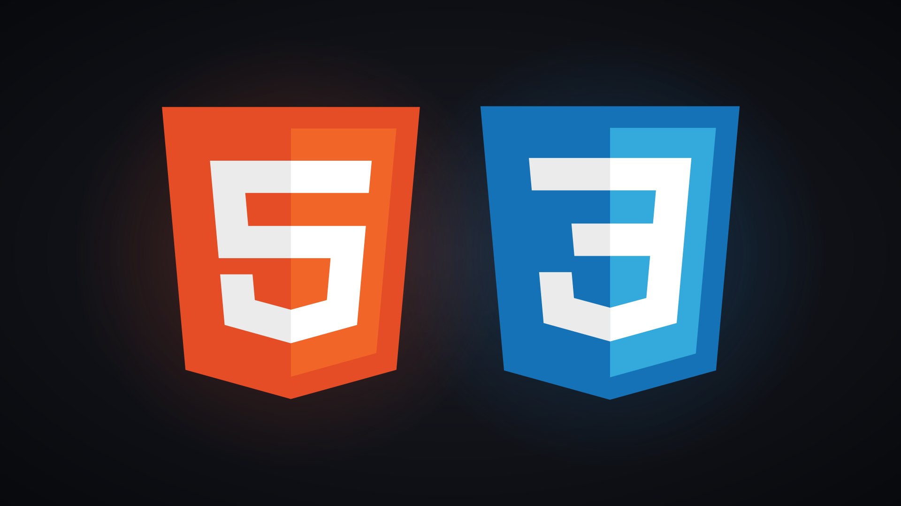

Décembre 2026
Dépannage informatique
Lycée Monnet-Mermoz, Aurillac
Dépannage informatique et installation de matériel.
Étudiant BTS SIO · Aurillac
Futur administrateur réseaux ou cloud. Je découvre le développement web, les réseaux et la cybersécurité à travers des projets concrets.
À propos
J'ai 18 ans et je m'intéresse aux réseaux informatiques et à la cybersécurité. J'aime apprendre en expérimentant : monter un serveur ou câbler un réseau font partie de mes activités.
Parcours
Décembre 2026
Lycée Monnet-Mermoz, Aurillac
Dépannage informatique et installation de matériel.
Février – Avril 2026
Europe Service, Aurillac
Maintenance du parc informatique et assistance aux utilisateurs.
Juin 2024
Escotel, Aurillac
Mise en place de la fibre chez les particuliers.
Compétences
Projets
Console imprimée en 3D, propulsée par un Raspberry Pi 4 sous RetroPie.

Mon premier portfolio en HTML5 et CSS3, responsive.
Hyperviseur open-source pour héberger mes services réseau dans des machines virtuelles et des conteneurs.
Contact
Disponible pour un stage ou une alternance.
Message
Une offre de stage ou d'alternance, une question sur un projet ? Votre message arrive directement dans ma boîte mail.
Le dépannage demande de la méthode : comprendre le problème, chercher la cause, puis corriger sans rien casser. Je l'ai pratiqué en stage.
GLPI est un logiciel libre de gestion de parc informatique et de support. Il garde une trace de chaque incident et de chaque machine.
Déployer un serveur, c'est l'installer, le configurer et le rendre utile à d'autres machines du réseau, sous Linux comme sous Windows.
Git garde l'historique de toutes les modifications d'un projet. Avec GitLab, ce dépôt est hébergé en ligne et peut être partagé.
Un réseau local (LAN) relie les machines d'un même site : bureau, salle de classe ou maison.
Console de jeux portable rétro, conçue de A à Z avec un camarade pour un projet professionnel de lycée. J'ai pris en charge l'électronique et le système.
Mon premier portfolio, écrit à la main en HTML5 et CSS3.
Déployer une solution d'hyperviseur open-source robuste avec Proxmox Virtual Environment (PVE) afin de centraliser et rationaliser l'hébergement de services réseau et applicatifs.
Le BTS SIO (Services informatiques aux organisations) est une formation en deux ans qui prépare aux métiers de l'informatique en entreprise. Je le prépare au lycée Monnet-Mermoz, à Aurillac.
C'est l'établissement d'Aurillac où je prépare mon BTS SIO.
Je suis basé à Aurillac, dans le Cantal. C'est là que j'étudie et que se déroulent mes trois stages.
Je parle français et anglais. L'anglais me sert surtout pour lire la documentation technique.
Après le BTS, je souhaite poursuivre mes études jusqu'au Bac+5 pour devenir administrateur ou architecte réseaux ou cloud.
Je vise deux certifications Microsoft Azure, dans cet ordre : d'abord les bases du cloud, puis l'administration.